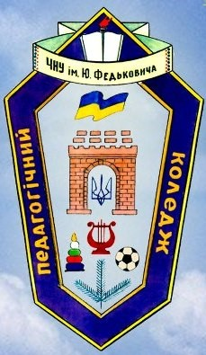

ШКІЛЬНЕ ВІДДІЛЕННЯ

РІК ЗАСНУВАННЯ: 1940
Завідувач відділення: Палій Наталія Теодорівна, спеціаліст вищої категорії, викладач-методист, кандидат педагогічних наук.
Поштова скринька: shkilne.viddilennia@ukr.net
На відділенні здійснюється підготовка фахівців за спеціальністю
«ПОЧАТКОВА ОСВІТА»
ОКР: «молодший спеціаліст»
Кваліфікація: «вчитель початкової школи»
Додаткові спеціалізації:
- «педагог-організатор»
- «керівник хореографічного гуртка»
Форма навчання: денна
Базова освіта: базова загальна середня освіта (9 класів)